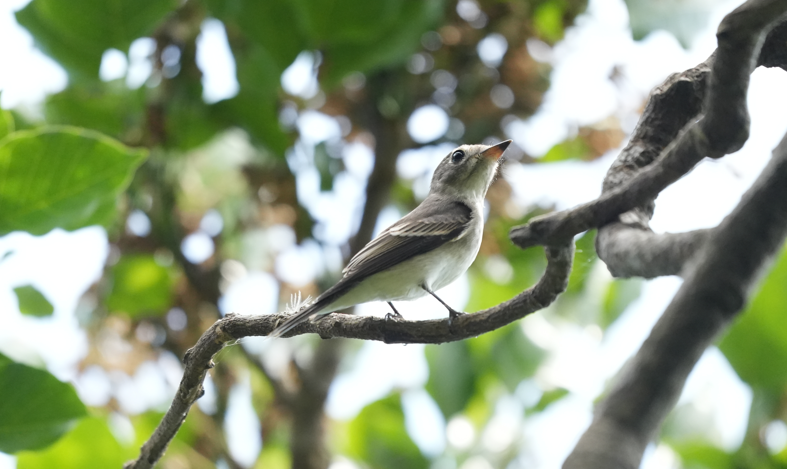
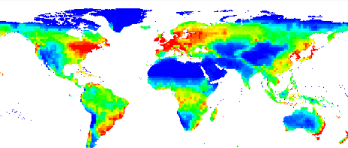
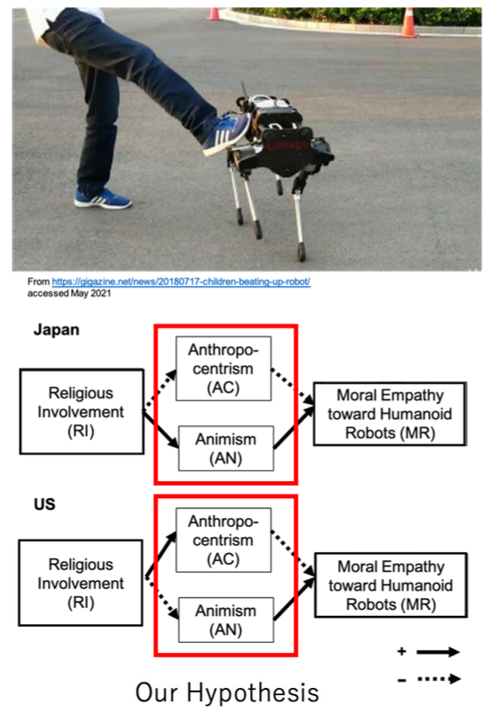
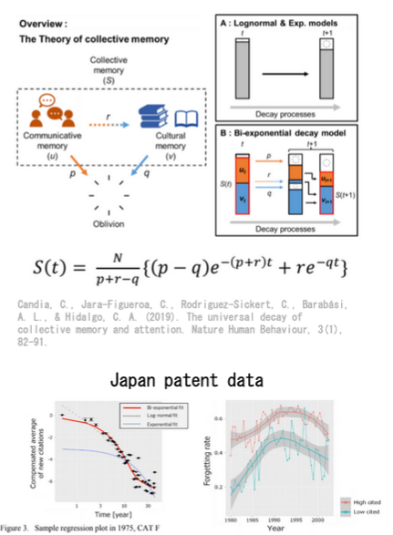
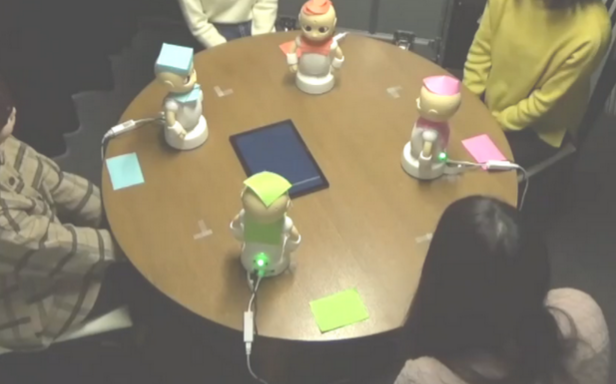
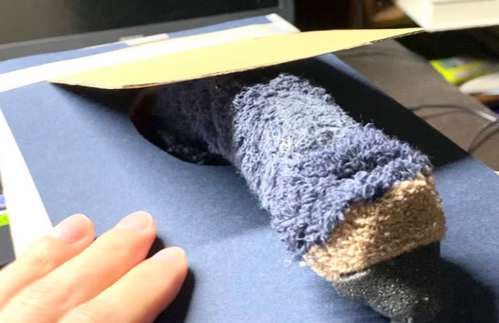
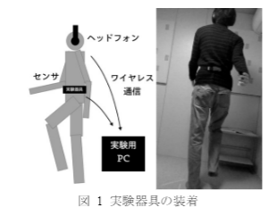

研究の概要
前口上

五十里は現在大学院生（博士課程）で、研究者としては仮免前のドライバーのような状態です。
一方でこれまで、ロボット工学（学部～修士）、心理学（修士）、生態学・生物多様性科学（博士）と 異なる分野を学んできたので、このページに並んでいるリストが多様化しています。
これは、学際研究が叫ばれる昨今を踏まえると、一見喜ばしそうですが、 進路や研究対象を決めるのに悩んできた（強い内発的な使命感に突き動かされてきたわけではない）ことを示していて、 当人としては悩ましいと思っていることです。 しかし、いろいろな分野にかかわってきたことで、 いろいろな分野の人の意見を自分なりに翻訳して受け止めることが習慣化したこと、 そして、個人が複数の領域の知識を得て自分で考えないと学際融合研究はできないことが身に染みたので、若いうちの経験としては 悪くないのだと納得させています。
マクロ生態学・生物多様性科学

2024年時点で、最も力を入れて研究しています。
億単位の年スケールで働いてきた大陸移動や気候変動といった現象から、 地域スケール、局所スケールで働くドライバーまで、 様々な現象が相互作用して形成され、そして維持されている生き物の多様性は、 私たちの生活を支える自然資本の根幹をなしています。
「地球上の生物多様性がいかに成立してきたか」という基礎的な視点と、「いかにその保全を効率よく行うか」という応用的視点の双方を重視しています。
2022年から、所属する研究室が立ち上げたスタートアップ「シンク・ネイチャー」に参画し、社会実装のチャレンジも取り組んでいます。
具体的な研究テーマ
- 日本の新生代の樹木におけるベータ多様性空間パターンの変動（修士時代の研究）
- 全球の生物多様性パターンに関する知識の完全性の評価手法（博士論文のテーマ）
- 古い草原の消失速度と草原の生物多様性の日本スケール評価（環境省推進費プロジェクト）
関連リンク
- Web
- 株式会社シンク・ネイチャー →会社のHP
- TN LEAD and GBNAT References →プロダクト説明文章の執筆を担当しています
-
論文
- Ikari, S., Shiono, T., & Kubota, Y. (2023)
- 久保田康裕ら (2023)
-
学会
- 塩野 & 五十里 (2023)
- Ikari (2024a)
- Ikari (2024b)
- Ikari, S., Shiono, T., & Kubota, Y. (2024)
バーチャル展示
VR技術を用いた博物館シミュレータの研究をしています。 3D空間上での直感的な展示操作ができるソフトウェアを開発し、 企業を興しました。 展示企画の空間設計に用いたり、 特別展・常設展のオンライン公開を支援したりといった形で、 博物館・美術館学芸員の支援をすることを意図しています。 それだけでなく、これまで「展示室」というメディアへのアクセスがなかった普通の人々でも、 身近な物事や自分の創作、そして地域文化について展示を作ってができる「だれでもミュージアム」を 提唱しています。
関連リンク
- Web
- 学会
- 伊藤, 五十里, 武澤他 (2020)
- 五十里, 武澤, 伊藤, & 松行 (2021)
- 武澤, 五十里, ＆ 伊藤. (2021)
- 特許
- 五十里, 武澤, 伊藤 (2021)
ロボットと宗教の心理学

この領域の研究は、修士時代に取り組んでいました。現在は休眠中です。
具体的には、ロボットに対する道徳的配慮（「いじめられるべきではない」と考えるなど）に現れる文化差を、宗教に由来する価値観（アニミズムと人間中心主義）に注目して検討しました。 日本とアメリカを対象として取得した大規模なデータ（N=4000）の分析による成果です。
関連リンク
- 論文
- Ikari, S., Sato, K., Burdett, E., Ishiguro, H., Jong, J., & Nakawake, Y. (2023)
- Burdett, E. R., Ikari, S., & Nakawake, Y. (2022)
- 学会
- 五十里翔吾, 佐藤浩輔, 佐藤鮎美, & 中分遥. (2021)
文化現象の実験・数理的検討
この領域の研究は、修士時代にサイドワークとして行っていました。 継続して関心を持っていますが、現在は休眠状態です。
特許引用の衰退モデル

集団記憶の二重指数減衰モデル (Candia et al., 2019) を日本の特許データに適用した試みです。 米国のデータの追試する結果および異なる傾向を発見しました。
修士時代に阪大でお世話になっていた「ヒューマンウェアイノベーションプログラム」の一環で取り組みました。
- 学会
- 三吉健太＊, 五十里翔吾＊, 藤原万櫻, & 鬼塚真. (2021)
宗教儀式の研究
宗教儀式を時系列信号とみなし、パターンの記憶されやすさの面から検討しました。 宗教儀式に模した動画を作って実験した、絵的なインパクトも面白い研究です。
- 学会
- 中分 遥, 佐藤 浩輔, 五十里翔吾 (2022)
ロボットやエージェントを作る研究
いったん興味が落ち着いた領域ですが、 その後の関心の原点となっている発想が散らばっているように思います。
ロボットによるコミュニケーションの促進

このテーマは、卒論で取り組んだ研究です。 難しい議論に対して、ロボットが先に話し始めて、それに人間が突っ込みを入れることで 参加しやすくなる、という発想で、4台のロボットとタッチパネルを連携させるという 大仰なシステムを作っていました。
- 国際会議
- Ikari, S., Yoshikawa, Y., & Ishiguro, H. (2020)
シンプルなペットロボット

チンアナゴをイメージしたロボットを使って、 ペットとの「餌やり」「追いかけあい」という相互作用を 再節約で実装し、どれだけ人間の持続的興味を引けるかという問いに取り組んでいました。
- 学会
- 五十里翔吾, 仲田佳弘, 呉羽真, 松井瑚子, 才脇直樹, & 石黒浩. (2021)
エージェント的な刺激で歩行周期を乱す研究

学部時代の自主研究で、 歩く速さが普段と変われば、ちょっとした非日常感が作り出せるのでは、という 発想で、相互作用する刺激によって歩調を乱すデバイスを作っていました。
- 学会
- 五十里 & 高橋 (2019)